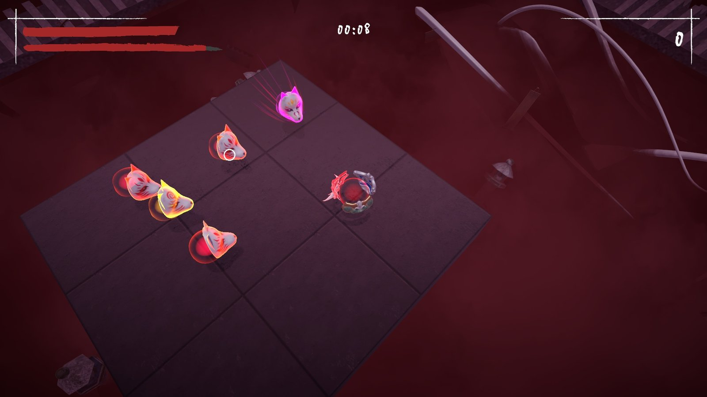
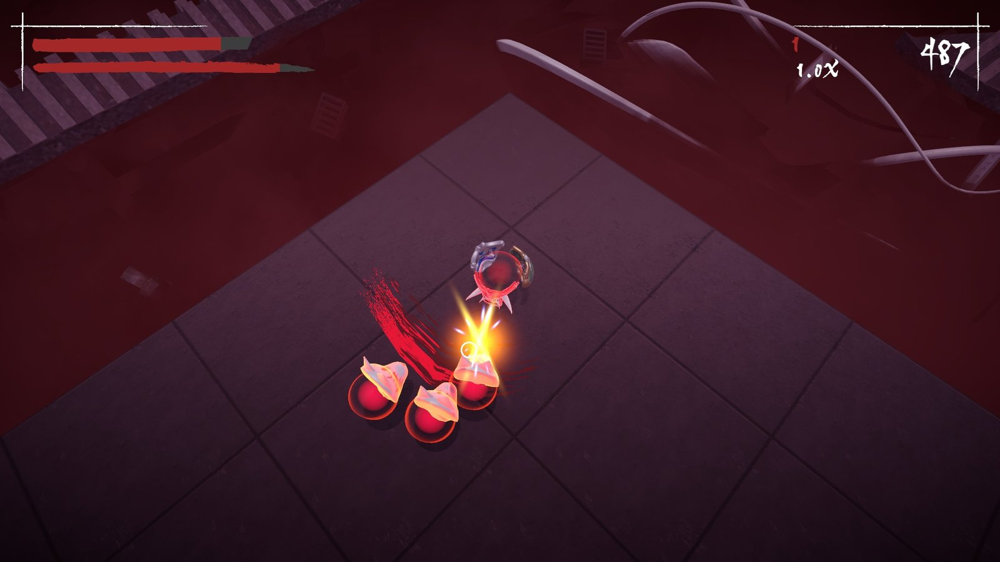
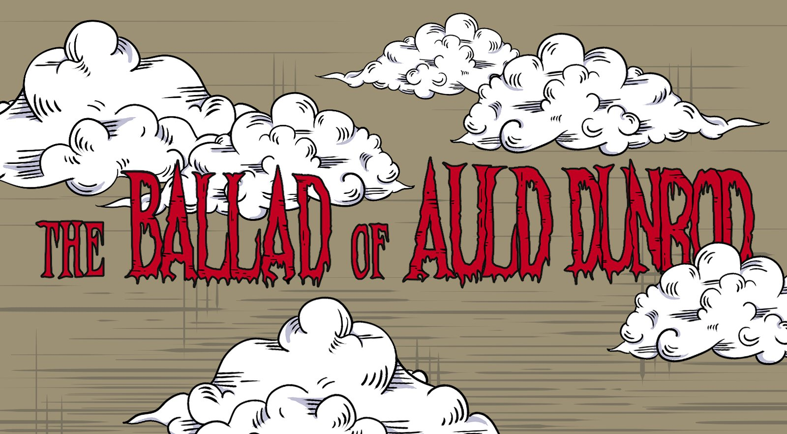
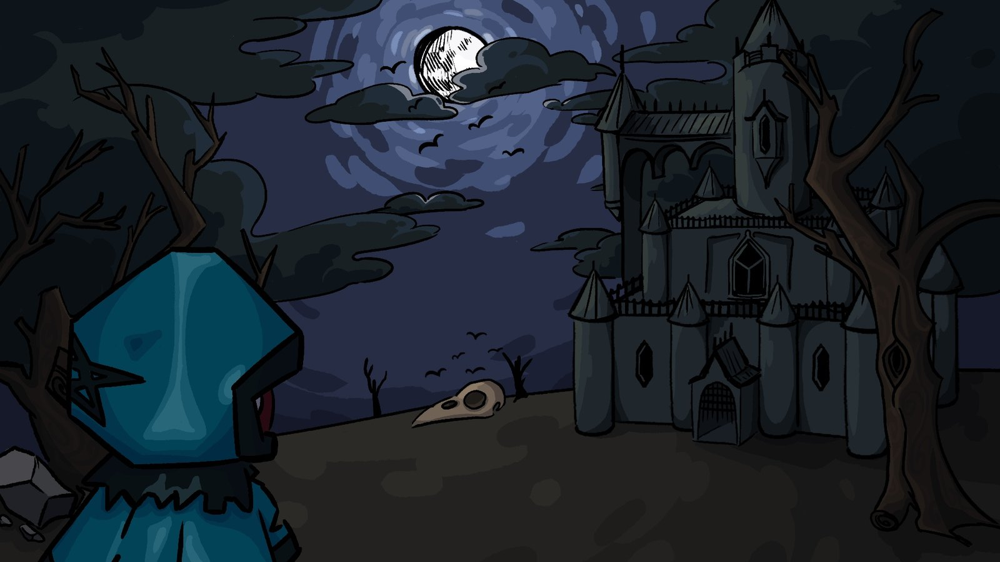
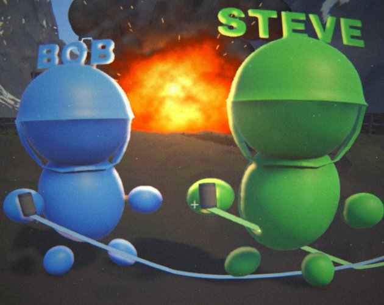
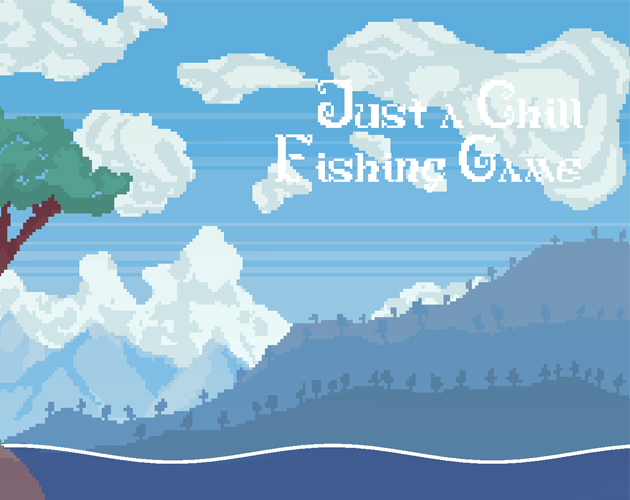

Open to work · Scotland / remote
Bosses that fight back.
I'm Allan, a gameplay programmer specialising in enemy AI and multi-phase boss systems in Unity and C#. I also build engine tech in C++ and OpenGL.

Kyomen Four-phase boss fight, heading to Steam →- BSc (Hons) 2:1Games Development, Glasgow Caledonian University, 2026
- Co-founderMarmot Studios Ltd, taking Kyomen to Steam
- 7 shipped projects3 playable right here in your browser
- C# and C++Unity gameplay and OpenGL engine work
Selected work
Featured: Kyomen

Programmer, Marmot Studios · Global Game Jam 2026, now heading to Steam
Don't let the weight of your past collapse the world. A fast-paced isometric arena combat game built around dynamic mask-based gameplay, started as a Global Game Jam 2026 entry and now in development by Marmot Studios for Steam.
- Designed and built a four-phase boss fight on state machines, with attack selection that filters by range and angle to the player and avoids repeating the last attack, and coroutine-based timing.
- Built the attack telegraph system: fill indicators built as procedural meshes for each attack shape, with a wind-up on every boss attack so players can read what is coming.
- Built the transitions between boss phases, including the explosive set piece that marks each escalation.
Engine work: Voxel World Prototype

Solo programmer · Personal project
A voxel world built from the ground up to explore procedural generation, real-time lighting, world interaction and collision. My first OpenGL project. I've since gone back and optimised it, and it now runs a 1,000 chunk render distance at around 970 FPS.
- 108 → 836 average FPS, same 64 chunk distance
- 48 s → 1.5 s world load time
- 1,000 chunk render distance, up from 64
More projects

- Play in browser
- Trailer
Third-person stealth exploration
The Ballad of Auld Dunrod
Programming Lead · 8 people
Built the guard AI: a patrol, investigate and chase state machine with view-cone detection and an alert meter.

- Play in browser
- Trailer
Arena shooter
Tower of Tales
Gameplay Programmer · 6 people
Created the boss's attack patterns, chosen by weighted scores that build up over time, with a second stage and a close-range attack that triggers when the player gets near.

Cooperative action
Bob n' Steve
Programmer · 5 people
Designed and implemented the shared-string mechanic linking the soldiers.

- Play in browser
Relaxed fishing game
Just a Chill Fishing Game
Gameplay Programmer · 5 people
Built the hook and line: hook movement, the fishing line and catching fish, and shared the casting code with a teammate.

Space shooter prototype
Asteroids
Solo programmer · Solo
Developed the rendering and gameplay systems in OpenGL.
About
I make enemies worth fighting.
I graduated in 2026 with a 2:1 in Games Development from Glasgow Caledonian University. Most of my work is combat: enemy behaviour, encounter pacing, and boss fights that react to the player while staying readable enough to feel fair.
After Global Game Jam 2026, the five of us who made Kyomen formed Marmot Studios Ltd to take it to Steam. I work on the gameplay and boss programming, and handled the early company and Steamworks setup.
Outside Unity I write C++ and OpenGL, including a voxel engine I profiled and optimised from 108 to 836 FPS. I've also built an AI Recap System that uses the Gemini API to turn in-game data into play-session recaps, driven by structured JSON from Unity.
- Languages
- C#, C++
- Engines and graphics
- Unity, OpenGL, WebGL builds
- Gameplay and AI
- State machines, boss and enemy behaviour, attack systems, weighted randomness, coroutine-based timing
- Also
- Git, controller input, JSON, Gemini API integration
- Experience
- Co-founder and Programmer, Marmot Studios Ltd, 2026 to present
- Education
- BSc (Hons) Games Development, 2:1, Glasgow Caledonian University, 2022 to 2026
Get in touch
I'm looking for my first games industry role as a gameplay or AI programmer. Studios of any size welcome.